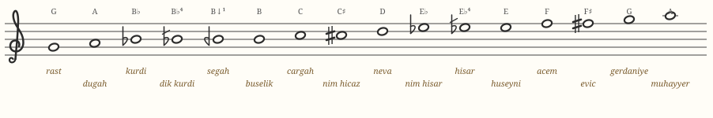
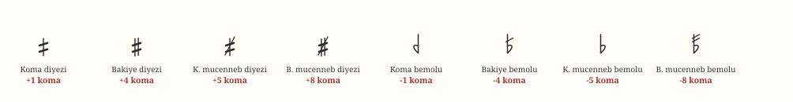
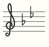
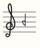
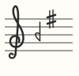
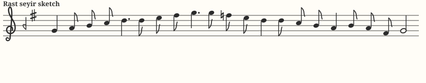

Chapter 03Reading Turkish Sheet Music
Turkish makam music is written on the ordinary five-line staff with a treble clef — you already know how to read that. What's new is a set of microtonal accidentals, a system of Ottoman note names, and one surprising convention about what pitch the written notes actually sound at.
Perde: every note has a name
Where Western musicians say “A” or “B♭,” Turkish musicians name each pitch with an Ottoman word: perde means fret, or pitch-step. These names matter because makams are described in terms of them (“Uşşak begins on dügâh and shows segâh…”). Here is the ladder of perde names you will meet in this course, from rast (written G) up to muhayyer (written high A):

A few of these deserve flash-card status right away:
| Perde | Written | Why it matters |
|---|---|---|
| rast | G | Tonic of Rast and Nihavend. |
| dügâh | A | Tonic of Uşşak, Hüseyni, and Hicaz. |
| segâh | B −1 koma | The signature “in-between” third of Rast; second of Uşşak/Hüseyni. |
| çargâh | C | A frequent resting point. |
| nevâ | D | Güçlü (dominant) of Rast, Nihavend, Uşşak, Hicaz. |
| hüseynî | E | Güçlü of makam Hüseyni, and its namesake. |
| eviç | F♯ (bakiye) | The bright leading region of Rast and Hüseyni. |
| acem | F♮ | Replaces eviç when melodies descend in Rast. |
| gerdaniye | G′ | Octave of rast. |
| muhayyer | A′ | Octave of dügâh. |
The AEU accidentals
Turkish notation modifies notes by specific numbers of commas, and each amount has its own symbol. Four sharps and four flats cover everything in this course:

| Symbol | Name | Alters by | You'll see it on… |
|---|---|---|---|
| mirrored ♭ | koma bemolü | −1 koma | segâh (B), eviç region — the Rast/Uşşak/Hüseyni key signatures |
| ♭ with slash | bakiye bemolü | −4 koma | dik kürdî (B) in the Hicaz key signature |
| plain ♭ | küçük mücenneb bemolü | −5 koma | kürdî (B♭) and nim hisar (E♭) in Nihavend |
| ♭ with two slashes | büyük mücenneb bemolü | −8 koma | rare; other makams |
| sharp, one vertical stroke | koma diyezi | +1 koma | occasional raised inflections |
| plain ♯ | bakiye diyezi | +4 koma | eviç (F♯), nim hicaz (C♯) — very common |
| one-stroke ♯ with slash | küçük mücenneb diyezi | +5 koma | hicaz (C♯) in some makams |
| ♯ with slash | büyük mücenneb diyezi | +8 koma | rare; other makams |
Key signatures
Turkish key signatures work like Western ones — the accidentals at the start of the line apply throughout — but they use AEU symbols and don't correspond to major/minor keys. A reader identifies the makam from the signature plus the final note. The signatures of our five:
| Makam | Signature | Meaning |
|---|---|---|
| Rast |  | B −1 koma (segâh) and F +4 (eviç) |
| Nihavend |  | B♭ and E♭ (both −5); F♯ appears inside the music |
| Uşşak |  | B −1 koma (segâh) only |
| Hüseyni |  | B −1 koma (segâh) and F +4 (eviç) |
| Hicaz |  | B −4 koma (dik kürdî) and C +4 (nim hicaz) |
Notice that Rast and Hüseyni share a signature. On paper they are distinguished by their final: a piece ending on G is Rast; ending on A, Hüseyni (or Uşşak's cousin family). This is normal — the signature narrows the field, the cadence decides.
Written pitch vs. sounding pitch: ahenk
Here is the convention that surprises Western readers most. Turkish notation is written at a fixed reference, but performed at whatever transposition suits the instruments and voices. The transposition standard is called ahenk. At the common bolahenk ahenk, everything sounds a perfect fourth lower than written (written rast G sounds as D); at mansur ahenk it sounds as written; singers pick whatever serves the voice. The notation — and the makam analysis — never changes; only the absolute pitch does.
All audio on this site plays at written pitch (A = 440 Hz), which keeps what you hear locked to what you see.
Rhythm: usul
Makam governs melody; rhythm is governed by a parallel system of cycles called usul — patterns of strong (düm) and weak (tek) strokes. Simple songs use short cycles like nim sofyan (2/4), sofyan (4/4), or the limping aksak (9/8 = 2+2+2+3); classical forms use cycles up to 28 beats and beyond. Time signatures and note durations on the page read exactly as in Western notation, so nothing new is needed to start; just know the word usul when you see it on a score.
Reading practice, chapter by chapter
Each makam chapter ahead contains a fully notated seyir sketch with matching audio. Read along while listening; that pairing — eye on the AEU accidentals, ear on the commas — is the fastest way to make Turkish notation feel native. Here's the one you already heard in Chapter 1:
